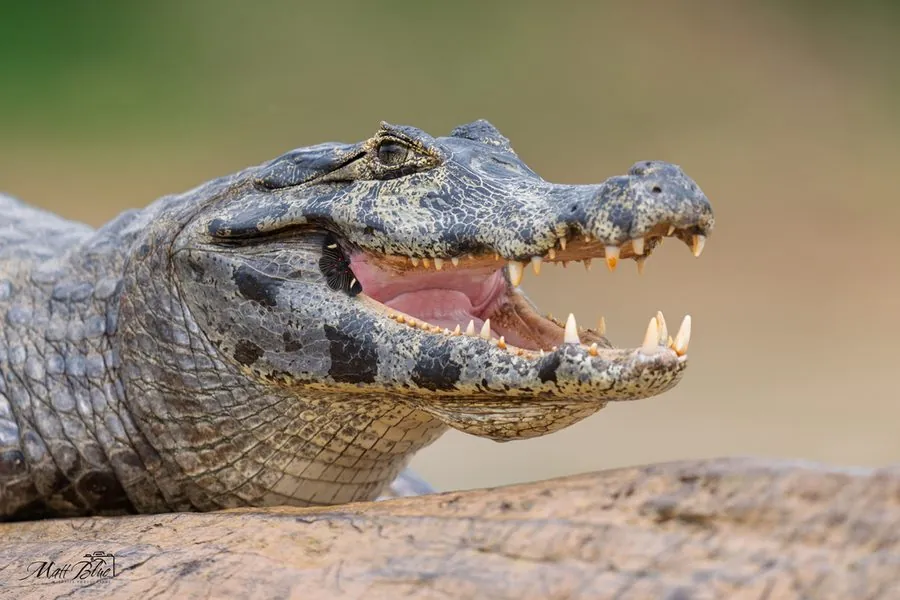

爬行动物 · 动物界
巴拉圭凯门鳄 Caiman yacare

潘塔纳尔湿地数量最多的鳄类，体色橄榄绿带黑色斑纹，雄鳄体长可达 2.5 米，旱季常成群聚集在残存水塘中。
- 分类
- 门脊索动物门纲爬行纲目鳄目科短吻鳄科属凯门鳄属
- 栖息环境
- 巴拉圭河与巴拉那河流域的湿地、沼泽、河湾与泛滥草甸，旱季聚集于残存水塘
- 地理分布
- 南美洲中部，包括巴西西南部、巴拉圭、玻利维亚东部和阿根廷北部
- 保护级别
- IUCN 无危（LC）；CITES 附录 II
物种志
巴拉圭凯门鳄雄鳄体长 2–2.5 m，雌鳄 1.4–1.7 m，体重 20–40 kg。吻部较宽，背部覆有发达的骨质鳞甲，体色橄榄绿至暗褐，身上分布黑色横带与斑点，眼睛上方有骨质棱脊，幼鳄体色较浅并带明显条纹。
它们分布在巴拉圭河、巴拉那河流域及亚马孙南部，核心栖息地是巴西、巴拉圭和玻利维亚交界的潘塔纳尔湿地。旱季时水位下降，成百上千条凯门鳄会聚集在残存的水塘和河湾中；雨季则分散到泛滥的草甸和森林。食物包括鱼、蛙、螺、水鸟和小型哺乳动物，牙齿适合咬碎螺壳。雌鳄在雨季初期用植物堆筑巢，每窝产卵 20–40 枚，孵化约 70–80 天。曾因皮革贸易被大量捕杀，后因保护措施种群有所恢复。
形态与习性
- 食性鱼、蛙、螺、水鸟和小型哺乳动物
- 体长雄鳄 2–2.5 m，雌鳄 1.4–1.7 m
- 体重20–40 kg
- 繁殖每窝 20–40 枚，孵化 70–80 天
- 习性旱季集群于残存水塘，雨季分散
- 保护CITES 附录 II，贸易受严格监管
趣味知识
- 旱季的潘塔纳尔湿地，数百条凯门鳄挤在同一片水塘里，是著名的生态景观。
- 它的牙齿适合咬碎螺壳，胃里常能找到大量螺类残片。
- 20 世纪曾因鳄皮贸易被大量捕杀，如今种群已明显恢复。